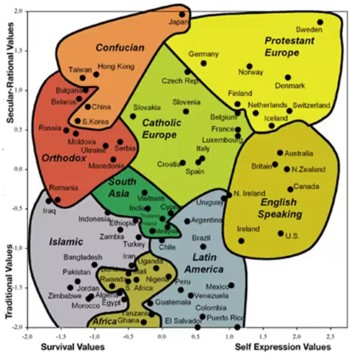
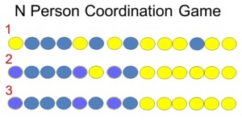
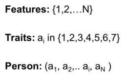
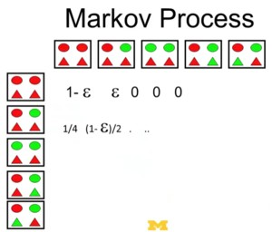

Coordination and culture
Coordination is doing the same somebody else is doing. Culture refers to differences between groups of interacting people. In order to have these differences between groups of people, there have to be similarities within those groups. That is where coordination matters. Cultural behavior can be suboptimal in the sense of efficiency. Often it doesn’t make sense from the outsider’s perspective, but viewed from within that culture, it makes sense.
The pure coordination game that enables us to understand why people do the same thing, and why sometimes they do the same thing that is not optimal. In the context of this game, an important question is does the whole system coordinate if people are trying to coordinate? To understand that, the Lyapunov function can be used on a single coordination game on one behavior.
It is also possible to have a many-action coordination game on multiple behaviors. This can be used to explain cultural differences. In particular, Robert Axelrod made a model that looks at how culture emerges, and why you might get thick boundaries between different cultures. There is also inconsistency within cultures. The coordination consistency model deals with both coordination between people and consistency within a person with the use of Markov processes.
What is culture and why do we care?
There are many definitions of culture. Culture is such a complex thing that no simple definition can capture it. Still, culture mattes a lot for the success of countries. Tylor, who is the father of modern cultural anthropology, said in 1871 that culture is the complex whole which includes knowledge, belief, art, law, morals and customs. Boas extended this in 1911 by calling culture the totality of mental and physical reactions and activities that characterize behavioral responses to environment, others and to the self.
Boas was the first to get the idea that there should be some consistency across these mental and physical reactions to the world. This consistency could be partly brought on with the environment or it could be socially constructed. These dry academic definitions don’t show exactly what culture is. Writers have also written definitions of culture, e.g. Calvin Trilling wrote in 1955:
When we look at people in the degree of abstraction which the idea of culture implies, we cannot but be touched and impressed by what we see, we cannot help but be awed by something mysterious at work, some creative power that seems to transcend any particular act or habit or quality that may be observed. To make a coherent life, to confront the terrors of the outer and the inner world, to establish the ritual and art, the pieties and duties which make possible the life of the group and the individual - these are culture, and to contemplate these various enterprises which constitute a culture is inevitably moving.
To make a coherent life refers to the idea of consistency. An essential reason for the existence of culture is to made possible the life of the group and the individual. In order for groups and individuals to function, they have to have some similarities within. They have to agree or coordinate on certain sets of behaviors, morals, laws, customs, and understandings, in order to confront the inner and outer world. The interesting thing about cultures is that people do this in different ways.

What could these differences be? And how extreme can these differences be? One way of figuring this out is doing experiments. The ultimatum game is an experiment that was done in different societies. Player 1 is given $10. Then player 1 is told to offer a split to player 2. The split might vary, e.g. $5 apiece, $2 for player 2 or even $0.01 for player 2. Player 2 can either accept or reject. If player 2 accepts the money, then they split it. If he rejects, they both get nothing.
Player 1 has to figure out what’s the minimum amount he can offer player 2 to get it accepted. People from different cultures didn’t play the game in the same way. One group were the Lamalera, who are Indonesian whale hunters that hunt collectively. Another group, the Machigenga, who are an Amazonian group that hunted individually and didn’t even use names, was much more selfish. On average the Lamalera offered $5.70, while the Machigenga offered $2.60.
Ron Inglehart, who spent decades surveying people all over the world doing something called the World Value Survey, constructed a graph by ranking different cultures on two dimensions, which are survival versus self-expression and traditional versus secular-rational. If you divide countries in these two ways, then the whole world makes sense by geography. e.g., protestant Europe is in the self-expressive secular realm while Islamic and African countries are more in the religious and survival-based area.
This map might suggest that all people from Sweden or Zimbabwe score the same. That is not true. Each country has a population and within this population there are differences. The point on the graph is just an average. The individual data points are clouds. But there is very little overlap between the scores of individuals in Sweden and Zimbabwe, so there is a difference between people from Sweden and Zimbabwe, but also differences within the Swedish people and within the people from Zimbabwe.
Geert Hofstede, who focused on the business world, uses five dimensions to make sense of cultures, which are:
- Power distance or how much inequality is tolerated,
- Uncertainty avoidance versus risk taking,
- Individualism versus collectivism,
- Masculinity versus femininity, and
- Confucianism versus dynamism or how forward looking are you?
The US scores are: power distance 32 (a low value signaling a lot of inequality tolerance), uncertainty avoidance 40 (low), individualism 90 (very high), and masculinity 60 (high). The scores of France are: power distance 61 (a high value signaling little inequality tolerance), uncertainty avoidance 80 (very high), individualism 63 (high), and masculinity 32 (low). Those dimensions are useful because they capture differences. But those dimensions don’t capture everything. e.g., South Korea and El Salvador score practically the same on Hofstede’s dimension, but they are completely different countries.
Why should we care about culture? This is because the economy, political systems and society work through social exchanges. According to Kenneth Arrow:
Virtually every commercial transaction has within itself an element of trust, certainly any transaction conducted over a period of time. It can be plausibly argued that much of the economic backwardness in the world can be explained by the lack of mutual confidence.
In cultures there are different levels of trust, and these different levels of trust have huge implications for how well political, economic, social, and religious institutions perform in terms of meeting the needs of the citizens. Bob Solow, who invented the growth model, wanted these notions of trust and social capital to be measurable in some way. That is one of the reasons why we have models like those of Inglehart and Hofstede.
How do you measure something like trust? This can be done using questions like do you claim government benefits you are not entitled to? Do you avoid paying a fare on public transport? Do you cheat on your taxes? Do you keep money if you found it? Do you fail to report damage you’ve done accidentally to a parked vehicle? These sort of questions indicate how trusting are people within a society.
You can also ask the question, do you think people in general can be trusted? There are massive differences across countries. In Sweden 70% of people answer this question positively. In Italy, it is 33%, and in Turkey it is only 10%. That is going to affect how well the economy is going to work.
It does matter a lot, because in general, rich countries have a higher level of trust. There is a correlation between trust and wealth, but that doesn’t imply that trust causes higher levels of wealth even though that seems plausible. It might also be that higher levels of wealth make people more trustworthy.
Pure coordination game
To make sense of cultural differences, a pure coordination game can be used. Some examples help to understand the pure coordination game. The ketchup question is do you store your ketchup in the fridge or the cupboard? Most Americans store their ketchup in the fridge, but people from England tend to store it in the cupboard. Where you store your ketchup is a cultural decision. You store it in the same place other people store their ketchup. This is an example of a coordination game. It is a situation where you do the same thing other people do, otherwise they can’t find the ketchup.
Other examples are electrical outlet plugs. Different countries have different plug configurations. Everybody in the country wants to coordinate on the same plug type, but different countries may coordinate on different types of plugs. The ramifications of failure to coordinate can be rather severe.
On the third of September in 1967 (Dagen H) at 4:00 AM, Sweden switched the side of the road they drove on from left to right. People from Sweden drove to other countries and caused accidents. It is also easier to make cars with steering wheels on the same side. England and some former British colonies still drive on the left. Those countries are mostly islands. On an island, you don’t have to worry about crossing a border and causing an accident. That is a coordination game.
This can be turned into a formal game. A game is a set of players with actions and payoffs. In the pure coordination game there are two players, and each player has one action. e.g., they can put the ketchup in the fridge or they can put it in the cupboard. If they both put their ketchup in the fridge, both get a payoff of one. If they both put their ketchup in the cupboard, both also get a payoff of one. But if one of them one puts it in the cupboard, and the other one puts it in the fridge, then each player gets zero because neither one can find the ketchup.

The game can be expanded to \(N\) persons that have to decide about something like driving left or right or whether the ketchup should be stored in the fridge or in the cupboard. Assume that they play this game against their two neighbors and switch their behavior if both neighbors behave differently. Because people want to coordinate their behavior to match other people they change their behavior to create the similarities within. After three steps you also see differences between groups emerging.
Does this game actually lead to similarities? Does this process stop or does it keep on churning? The answer can be found using the Lyapunov functions. If the process can be represented by a function that has a maximum, and it goes up by at least some fixed amount each time if it moves, then the process is going to stop at some point.
If this pure coordination game is played asymmetrically, that means having only one person moving at a time, which is unlike the example in the graph, then you can show that it satisfies the Lyapunov function of the number of coordinations. e.g., if someone switches to blue, the number of coordination goes up by two. There is also a maximum to the number of coordinations, meaning that everyone has the same color, so the process has to stop. The process doesn’t have to stop with everybody being the same as you can get a boundary between the colors.
There is a difference between coordination and the standing ovation problem. In the coordination model, e.g. choosing the side of the road to drive on, there is a measurable difference in payoffs so no-one would choose not to coordinate. In the standing ovation model it is more a psychological effect. It is no problem to differ from other people.
Inefficient coordination refers to behavior that doesn’t seem optimal. To make sense why this happens, you can use the inefficient coordination game. It may apply to implementing the metric system \(M\) versus the obscure English system of measurements \(D\). If both parties agree on \(M\), they get a payoff of 2. If both agree on \(D\), they get a payoff of 1. If they differ, they get a payoff of 0. If both parties were free to choose they would agree on \(M\), but in England people are stuck with \(D\).
How do you get inefficiency? The metric system wasn’t around when the English measurements were made up. Situations can shift. This can be explained with the shake-bow game. Greeting people is a coordination game. It is important that we greet people the same way. If one shakes and the other bows, eyes get poked out. If both shake hand, they get a payoff of 1. If one shakes and one bows, we both get 0. If both bow, bot get a payoff of \(a\).
The question is: which is better, bowing \(a > 1\) or shaking \(a < 1\)? Shaking could be better than bowing because people can get a sense of the other’s general health by feeling. However, recently the value of \(a\) has increased because people now travel all over the world in airplanes with germs over the seats and touching these seats spreads germs all over the hands. And then bowing is better than shaking because the world has changed. As a result, countries that are shaking could get stuck in a suboptimal way of greeting, just like England is stuck in a suboptimal system of measurements.
Emergence of culture
To understand why cultures differ, the pure coordination game is extended to multiple games. Culture is the result of lots of coordination games. Here are some example questions. Do people wear shoes in your house? Do you cross the street when the “don’t walk” sign is flashing? Do you read the newspaper at the breakfast table or are you talking to people? Do you hug your friends when you see them? And do you interrupt someone who’s talking?
Each of these situations is a pure coordination game. If everybody else is wearing shoes in the house, you don’t want to take your shoes off cause you will get dirt all over your feet. If you are walking with friends, and they don’t cross the street when the sign is flashing and you do, then they will be standing on one side of the street and you will be standing on the other. If you read the newspaper at the breakfast table and the other person is hoping to engage in conversation, he is going to stare at your newspaper. If you’re in a culture where people don’t interrupt and somebody interrupts you, this disrupts the flow of the conversation.
People that give the same answers to these questions are culturally similar. If there are 20 coordination games with two possible answers to each, then you have 220 or more than 1,000,000 possible cultures. There are of course more coordination games, and many of them have more than two answers, so there are many more possible cultures. Why do cultures differ? The paradoxical answer is they differ because everyone is trying to coordinate. People are trying to coordinate within a culture most likely on issues that are different than those in others cultures.

Robert Axelrod’s culture model [@Axelrod1997DisseminationofCulture] explains how cultures emerge, and why there are boundaries between cultures. Axelrod defines a set of features which are coordination games like whether you read the newspaper at the table or talk. Traits define what action you take on that feature, e.g. talk. There could be multiple options. A person is a vector of traits on features. For instance, person A wears shoes in the house, stores ketchup in the fridge, and reads the newspaper at the table.

Axelrod then puts people in social space that could be represented by a grid of boxes that represent people. The last assumption Axelrod makes, is that people interact with their four direct neighbors in the grid with a probability that is equal to the similarity between them. This interaction works like a coordination game.
If you don’t agree on much with your neighbor then you don’t interact and don’t change your behavior. If you agree on everything then you interact for sure, but then you don’t have to change anything. If you agree for 70% of the traits, then you randomly pick a feature, and then match the trait of that person. It could be you already match that person on that trait, but if you don’t then you will switch and match.
This can be worked out using a model. Suppose there are five features, ten values, four neighbors (North, South, East, West), and the similarity is the percentage of traits that a person agrees with the another person. When two people meet, one of them is a leader while the other is a follower. e.g., the leader may have the characteristics 53211 and the follower 51331.
The probability these two people are going to interact is 40% because they agree on two traits out of five. If they decide to interact, then then they decide play a coordination game on one of the traits, e.g. the second trait. The follower then matches this trait to the leader so that his characteristics become 53311.
This can be simulated using NetLogo. In this example there are five features and twelve traits. In the centre of each square is a person. The thickness of the boundary represents the number of treats those two people agree on and thus the likelihood they will interact. If that line is dark, there is little agreement, and if it’s lighter, there is more agreement and a higher probability of interaction.
Over time the number of regions are falling and the cultures are becoming more similar. The largest region is also growing but there is still some cultural heterogeneity. And if we let it run till it stops, you get a few separate cultures and there are thick boundaries around them. They have to have these thick boundaries because if they didn’t, people would interact with their neighbors across those boundaries and become similar.
Axelrod’s model shows that similar regions emerge, so that you get multiple cultures, but the boundaries between those cultures are thick. Axelrod then concludes that if our neighbors are like us, we tend to interact with them, and if they are not, we tend not to. This produces distinct cultures with thick boundaries or vast differences between these cultures. Thick boundaries emerge because of the fact that if there weren’t thick, then people would interact and become more similar so that the boundary would disappear. Axelrod’s model shows how distinct cultures on multi dimensions can emerge with self-reinforcing boundaries.
Coordination and consistency
Axelrod’s model leaves out the notion of consistency within a culture. Jenna Bednar developed a model of culture based on coordination games that includes coherence and consistency as well as the heterogeneity within cultures. In Ron Inglehart’s World Value Survey, there are a lot of consistencies across countries, e.g. Protestant Europe looks the same, Catholic Europe looks the same and the Islamic countries look the same. On the other hand, everybody hasn’t the same characteristics. e.g., people in Sweden differ. And the same is true for Zimbabwe.
To explain why there is consistency and heterogeneity within a culture we assume that:
- the values, actions, and behaviors that people coordinate on have some meaning;
- people desire some consistency, e.g. to avoid cognitive dissonance;
- there is some innovation and errors.
The coordination rule is that two people, that each have a vector of actions, beliefs or attitudes, meet, and the follower randomly picks a dimension, and coordinates on this dimension, e.g. he puts the ketchup where his friend puts the ketchup. Consistency would be this that a person looks at himself, and attribute values of the vector have meaning. e.g., a person with characteristics 5144 might think, I’m 5 on the first and 1 on the second, and that doesn’t make sense, so I switch and become 5 on the second. And so the characteristics of this person become 5544.
e.g., you come from a family that is pretty reserved, so you don’t even hug your parents very often, and have hugging behavior 1. Then you go to college and all your friends hug each other. Now you have hugging behavior 5 with your friends. When you go home you realise you have been hugging someone you just met a month ago to say good-bye so you start hugging your mother and change your behavior to 5. If you hug your friends, you might as well hug your mother. In this way you become more consistent in terms of how you behave.
If we assume that people try to coordinate with other people, and try to be consistent, it could be expected to lead to consistent coordinated behavior. It happened but the process took an incredibly long time to converge. When some tiny errors or innovations were introduced, then there were big spreads in the characteristics of individuals like those in Sweden and Zimbabwe. Only a small number of people have to try new things, to get that level of heterogeneity within a community.
That was a surprising result. The question is why? Suppose the model converges to everybody being 5 on everything and somebody decides to innovate a bit and change to 6 on one thing. We might think that this should go away because people try to be consistent with themselves or meet somebody else so that it gets corrected to 5.
Another possibility is that during an interaction somebody else copies the 6 or that people themselves switch other attributes to 6 in order to be more consistent. In this way the six can spread within a person (horizontally in the graph) and across people (vertically in the graph). If more of such innovations or errors are made, e.g. switching to 7, these can also spread. This means the process isn’t going to converge very fast. There is a lot of spread because errors propagate in many directions. Most traits are going to be fives, but there will be sixes and sevens everywhere.
It is possible to mathematically understand why small amounts of error can cause a big spread. The simplest model consists of two agents, two games, and two actions. e.g. two people are deciding whether to hug or bow with their family, or hug or bow with their friends. Now it is possible to write down all possible states of the world. The columns represent the games. The rows represent the persons.
The following could happen:
- both do the same thing on both games, e.g. action red;
- one person is taking one action on both games, but the other person is taking the other action one game, which is called off by one;
- they could be consistent but not coordinated, e.g. one person is green on both, and the other person is red on both;
- they could be coordinated but not consistent, e.g. they could both play the red action on one game and the green action on the other game, but they would have a lot of cognitive dissonance because neither one is consistent;
- they could be not coordinated and not consistent, which could be a total mess.
If this system is without an error, the dynamics can be described. e.g., in the state where people are off by one, the consistency dynamic is as follows:
- person 2 could look at himself, check for consistency, and conclude that he is consistent, and nothing would change;
- person 1 could look at herself, check for consistency, and conclude that she is not consistent, and switch both actions to red. Then both would be consistent, but neither would be coordinated;
- person 2 could look at herself, check for consistency, and conclude that she is not consistent, and switch both actions to green. If person 1 finds herself to be inconsistent, then there is a 50% chance for (2) to happen as well as a 50% chance for (3) to happen.
It is also possible to write down the coordination dynamic for all the different states including the probability of moving from those states to other states. e.g., if there is a total mess (top), and one of the persons looks at himself or herself and decides to become consistent, then they move to the off by one state (centre). Alternatively, suppose that two people may decide to coordinate. Then again, they move to the off by one state. No matter what happens, with probability they move from the total mess state to the off by one state.
In the off by one state (centre), a lot could happen. They could stay in the off by one state, e.g. when person 2 looks at himself and decides that he is consistent, or if these two people decide to coordinate on action 1. Alternatively, it would be possible to move over to the state consistent but not coordinated (right) or coordinated but not consistent (bottom). Finally, they could move to the coordinated and consistent state (left). This is the only state that is stable because they will not move out.

This is like a Markov process, except that they can’t get from any state to any other state because they can get stuck in the equilibrium coordinated and consistent state. If there is innovation or error \(ε\) then they can move back to the off by one state and then it is a Markov process.
In this way it becomes possible to write a matrix we with the horizontal axis representing the states at time \(t\) and the vertical axis representing the states at time \(t+1\). The cells represent the odds of moving from one state to the other. This model shows that small innovation rates lead to substantial heterogeneity. This was a big surprise.
There are differences between cultures, so people from France behave differently than people from Mexico. There are also see similarities within, meaning that people within an interacting group become similar. Their behavior isn’t identical and there is a lot of within-group heterogeneity, e.g. in Sweden or Zimbabwe. Some of that behavior is interesting in the sense that it doesn’t appear to be optimal from the outside. e.g., people might do 5 to become consistent, even though it is not optimal.
There are three ways people can coordinate on a wrong action:
- by idiosyncratic coordination on the wrong thing.
- payoffs can change over time, e.g. with bowing versus shaking hands.
- to maintain consistency, people could choose a behavior that is not optimal in one domain.
Culture can be seen as multiple coordination games, where people are trying be consistent. To get good outcomes, it’s important to coordinate behavior, e.g. to greet people the same way. There is still a lot of within-group heterogeneity that could be explained by assuming that there is a small amount of error and experimentation as errors propagate in two directions. This could be shown using a Markov model.
Pure coordination behavior creates a Lyapunov function so this process converges quickly.
If we include consistency and error then we no longer have a Lyapunov function , but we could use a Markov model.
The Lyapunov model and the Markov model can be used to explain other models like the culture model.
Even though culture is complex, simple models allow us to understand some basic properties of cultures, such as difference between cultures, consistency within cultures, and heterogeneity within cultures.
References
Note: this page is based on the following source:
- [@page2017modelthinking] MOOC, Course material & Transcripts.
- TA Notes by [@fisher2017modelthinking].
- Student notes by in [@kleinikink2016naturalmoney] and [@groh2017model].